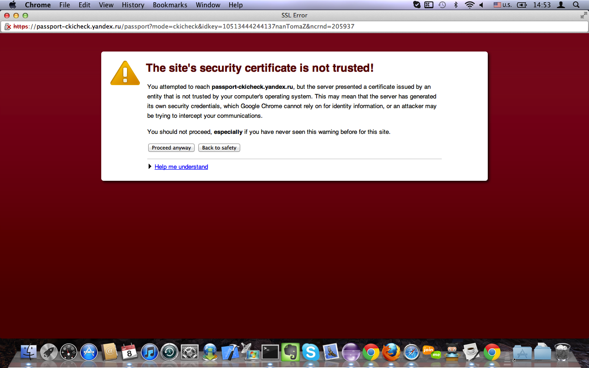

| Selenium-Command | Parameter-1 | Parameter-2 | Res.RC | Res.Selenium | Time [ms] | Calling-Class with Linenumber |
| executing createNewLoggingSelenium() |
| windowFocus | | | OK | OK | 8 | com.test.fw.SeleniumHelper#72 |
| windowMaximize | | | OK | OK | 10 | com.test.fw.SeleniumHelper#73 |
| executing getSelenium() |
| getLocation | | | OK | http://umagicpro-pp/selenium-server/core/Blank.html?start=true | 25 | com.test.fw.SeleniumHelper#34 |
| getLocation | | | OK | http://umagicpro-pp/selenium-server/core/Blank.html?start=true | 10 | com.test.fw.SeleniumHelper#34 |
| executing testRestorPassTrue() |
| Restorу pass with e-mail= 100102 |
| open | http://umagicpro-pp/user/login | | OK | OK | 2700 | com.exit.tests.Administrator#73 |
| isElementPresent | link=Администратор | | OK | true | 10 | com.exit.tests.Administrator#74 |
| click | link=Восстановить пароль | | OK | OK | 143 | com.exit.tests.Administrator#75 |
| waitForPageToLoad | 30000 | | OK | OK | 1241 | com.exit.tests.Administrator#76 |
| getText | css=span | | OK | Имя пользователя или адрес e-mail: * | 8 | com.exit.tests.Administrator#77 |
| isElementPresent | id=error | | OK | false | 7 | com.exit.tests.Administrator#78 |
| type | name | 100102 | OK | OK | 13 | com.exit.tests.Administrator#79 |
| click | op | | OK | OK | 12 | com.exit.tests.Administrator#80 |
| waitForPageToLoad | 30000 | | OK | OK | 2002 | com.exit.tests.Administrator#81 |
| getText | css=th | | OK | Вход в личный кабинет администратора | 7 | com.exit.tests.Administrator#82 |
| isElementPresent | id=error | | OK | false | 7 | com.exit.tests.Administrator#83 |
| getText | css=div.messages.status | | OK | Дальнейшие инструкции отправлены на указанный почтовый адрес. | 7 | com.exit.tests.Administrator#84 |
| isElementPresent | id=error | | OK | false | 6 | com.exit.tests.Administrator#85 |
| open | http://mail.yandex.ru | | OK | OK | 677 | com.exit.tests.Administrator#92 |
| type | id=b-mail-domik-username11 | SqaTest | OK | OK | 27 | com.exit.tests.Administrator#93 |
| type | id=b-mail-domik-password11 | gtnhjczy | OK | OK | 9 | com.exit.tests.Administrator#94 |
| click | css=input.b-mail-button__button | | OK | OK | 13 | com.exit.tests.Administrator#95 |

automaticErrorScreenshot2012-08-08_14-53.png | 466 | com.exit.tests.Administrator#96 |
| waitForPageToLoad | 30000 | | ERROR | com.thoughtworks.selenium.SeleniumException - Timed out after 30000ms | 30482 | com.exit.tests.Administrator#96 |
| executing dismissSelenium() |
| close | | | OK | OK | 10 | com.test.fw.SeleniumHelper#82 |
{kind=link}